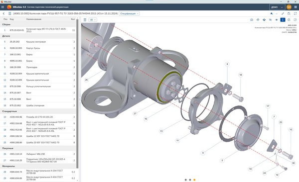
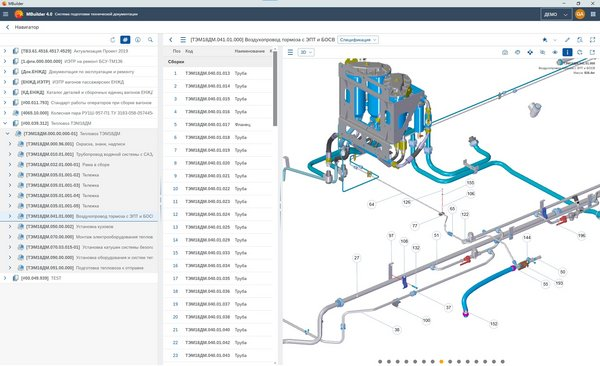
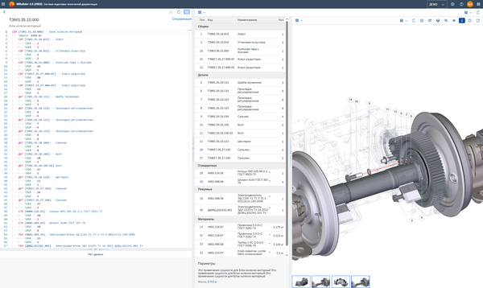
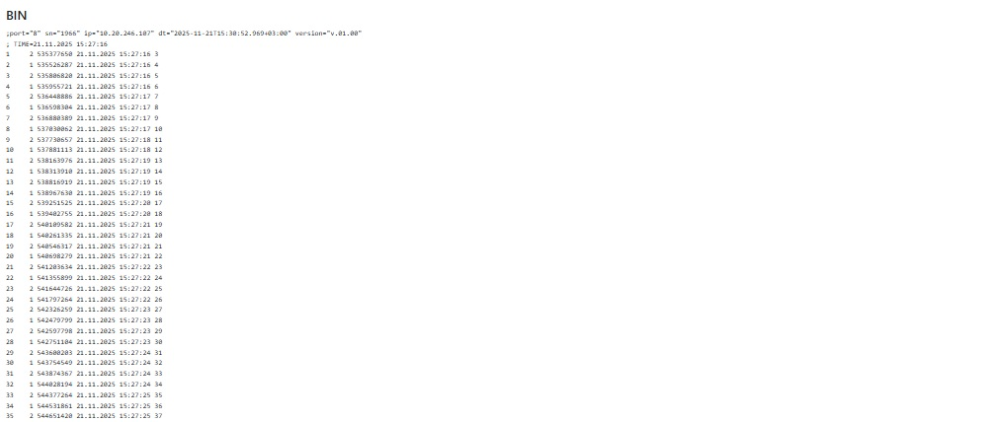
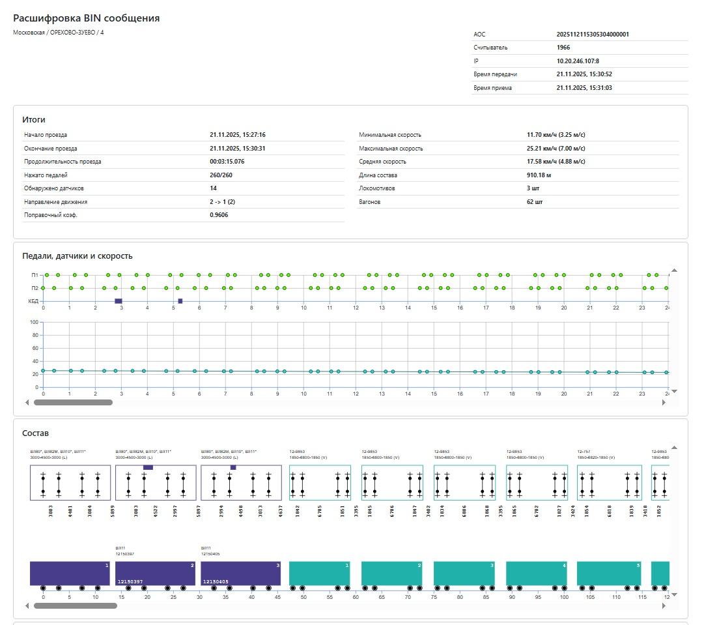
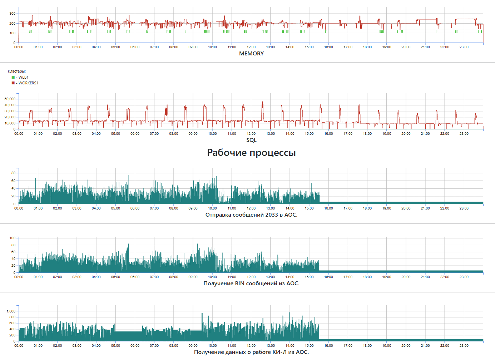
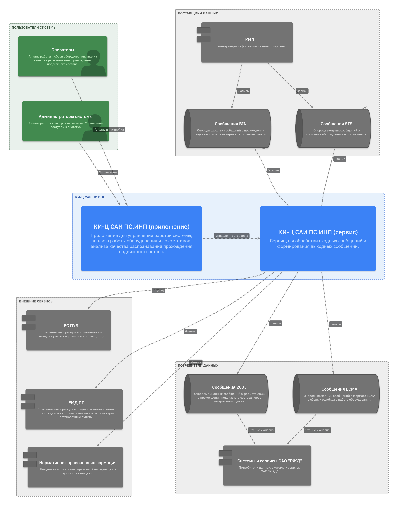

MBuilder
Платформа для создания интерактивных электронных технических руководств (ИЭТР). Контент интерактивных руководств разрабатывается на основе конструкторской, технологической и нормативной документации, включает в себя 3D интерактивный иерархический каталог деталей и узлов оборудования, снабженный подробной текстовой и графической информацией о вариантах исполнения, материалах, нормах допусков, технологическом процессе обслуживания и ремонта, оснастке и инструменте. 3D представление позволяет лучше понять конструкцию изделия и обеспечить наглядность работы ее узлов и деталей. MBuilder позволяет отображать данные, представленные в самых разных форматах: HTML, MD, PDF, XML, JSON, 3D (SMG, GLTF, STL, VRML), SVG, JPG, PNG, AVI и т.д.
Роль
Аналитик / Архитектор / TeamLead, начиная с 1-ой версии продукта, все это время проект успешно развивался, сейчас внедряется четвертая версия. Разрабатывал архитектуру, определял технологии и форматы данных, написал наиболее сложные части кода системы, в частности, обработку и отображение 3D.
Результат
Внедрение последней версии продукта позволило перейти от специального приложения к web, которое работает на любых браузерах и устройствах. Внедрил новые форматы 3D моделей, что позволило сократить объем последних от 20 до 100 раз без потери качества. Разработал новые встроенные редакторы взамен внешних, требовавших приобретения дополнительных лицензий.
Стек
Версия 4.0
Примеры экранов
Спецификация изделия и вид с разнесенными частями (3D)

Электронный каталог и с просмотром текущей сборки

Правка спецификации с предварительным просмотром результата

КИ-Ц САИ ПС.ИНП
Концентратор информации центрального уровня предназначен для отслеживания в реальном времени прохождений железнодорожного подвижного состава через контрольные пункты. Сервис должен
- обеспечивать нагрузку более 100 000 проездов в сутки
- расшифровку и анализ сообщений о проездах с учетом возможных ошибок и неправильной настройки оборудования
- расшифровку и анализ сообщений о состояние специального оборудования
- получения дополнительной информации из смежных сервисов РЖД
- хеширования данных для ускорения работы
- сохранения данных в БД для контроля работы сервиса и оборудования
- передачу расшифрованных данных и данных об ошибках в смежные системы
- сбор статистической информации для исправления ошибок
- сбор данных для логирования ошибок и мониторинга нагрузки
- поддержку клиентской части (SPA) для контроля и управления
Роль
Аналитик / Архитектор / TeamLead. Спроектировал архитектуру системы, базу данны, определил средства разработки. Выписал основные рабочие процессы. Использовал статистические алгоритмы для нивелирования ошибок, связанных с некорректной настройкой оборудования.
Результат
Система внедрена и работает, нагрузку держит. Сдать удалось благодаря красивой и убедительной картинке о результатах расшифровки (в ТЗ не было), поэтому вопросов о достоверности результатов не возникло.
Стек
Примеры экранов
Данные от датчиков

Это процесс и результат расшифровки

Мониторинг процесса

КИ-Ц САИ ПС.ИНП (документация)
Ниже приведён пример оформления документации, вырванный из технического задания, с использованием диаграмм C4. Все диаграммы можно посмотреть по ссылке
. . .
4.1.1.3 Структура взаимодействия отдельных подсистем КИ Ц САИ ПС.ИНП со смежными системами ОАО «РЖД».

Рисунок 4 –Взаимодействие подсистем КИ-Ц САИ ПС.ИНП со смежными системами
Сведения о проследовании подвижным составом пунктов считывания направляются КИ-Л САИ ПС в очередь бинарных сообщений P.SAIB, сведения о состоянии и работоспособности технических средств САИ ПС направляются КИ-Л САИ ПС в очередь бинарных сообщений P.SAIS, и должны приниматься из указанных очередей средствами КИ Ц САИ ПС.ИНП. Для тестового полигона должна быть организована средствами АСУ АОС специальная очередь исходящих сообщений, сформированная администратором АСУ АОС на основе ранее полученных сообщений.
Исходящая информация о проследовании поездами остановочных пунктов должна передаваться КИ Ц САИ ПС.ИНП сообщениями 2033 в очередь выходных сообщений для отправки средствами АСУ АОС в АСОУП (АСОУП-3). Для тестового полигона выходной поток будет записываться в тестовую очередь MQ для анализа и просмотра.
Для расшифровки и верификации состава поезда в КИ Ц САИ ПС.ИНП должна быть реализована функциональность запроса данных о составе поезда из АСОУП (с использованием хранимой процедуры АСОУП-3 / соответствующего сервиса ЕМД ПП).
Для поддержания в актуальном состоянии НСИ, в частности, сведений о дорогах, остановочных пунктах, КИ Ц САИ ПС.ИНП должен взаимодействовать с системой АС ЦНСИ. Для загрузки данных таблиц IC00.DOR, IC00.STAN, IC00.STAN_ATR IC00.STAN_ATR, IC00.VAG_MOD, IC00.LOCSER_ATR, DIC_OBJECTS должен использоваться вызов хранимой процедуры @LNSI01.GETNSI.
В КИ Ц САИ ПС.ИНП должна быть организована загрузка справочных данных о серии, номере, индексе секций подвижного состава по 8-значному номеру КБД по локомотивам от ЕС ПУЛ с использованием сервисов ZPUL_ISOP_STATUS_EO (получение данных одного локомотива), ZPUL_F_GET_LOCS (получение данных выбранной группы локомотивов), ZPUL_ISOP_ASOUP_CHG_HIS_SEND (получение сведений об изменении данных локомотивного парка).
4.1.1.4 Требования к механизмам диагностирования и мониторинга работы системы
Основной задачей системы мониторинга является автоматизированный контроль работоспособности системы как в целом, так и конкретных показателей функционирования в режиме времени, приближенном к реальному.
Мониторинг системы должен осуществляться на следующих уровнях:
. . .
СТУППК
Система технологического управления пригородным пассажирским комплексом РЖД (ППК) предназначена для автоматизации существующих бизнес-процессов деятельности ППК в части обработки обращений граждан и организаций по состоянию ППК, маршрутизации обращений, контроля исполнения поручений, паспортизации пассажирских обустройств, планирования и мониторинга осмотров и ремонтов объектов пригородной инфраструктуры.
Роль
Архитектор / Lead Full-Stack разработчик. Разработал алгоритмы и реализовал функционал оперативной регистрации и маршрутизации обращений. Подготовил, согласовал и реализовал интеграционные решения для взаимодействия со смежными системами РЖД – параллельными источниками обращений.
Результат
Оптимизационный алгоритм маршрутизации обращений позволил назначать конечного ответственного в 8 раз быстрее. Способ хранения и представления различных типов данных, позволили обрабатывать обращения в нормативные сроки и сократить объем повторных обращений на 40 %.
Средства разработки
EDM (Entity Data Model)
ORM библиотека, предназначенная для разработки клиент-серверных приложений с трехзвенной архитектурой, которая позволяет:
- описывать модель данных
- создавать базу данных или делать изменения в существующей БД по модели данных
- создавать классы и объекты данных, используя модель данных
- создавать конфигурации - специальные структуры для хранения различного рода настроек и определений
- задействовать в одном проекте несколько баз данных
- выполнять запросы к базе данных и делать изменения
- автоматически строить запросы по модели данных
- использовать специальные шаблоны для построения сложных динамических запросов по переданным параметрам
- передавать на сервер и возвращать результаты запроса к базе в виде сложной структуры связанных объекты (любой объект может содержать ссылки на другие объекты или списки связанных объектов)
- использовать как на клиенте, так и на сервере одни и те же объекты данных
- использовать информацию о модели данных для построения форм, фильтров, отчетов и т.д.
- использовать систему ролей и маркеров доступа, для разграничения доступа к данным
Роль
Архитектор / разработчик.
Результат
Внедрение библиотеки позволило унифицировать способы работы с данными, как на стороне сервера, так и на стороне клиента, значительно сократить затраты при реализации различных проектов.
Средства разработки